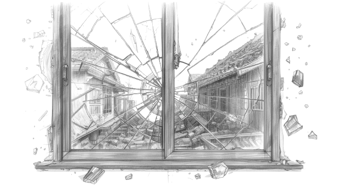
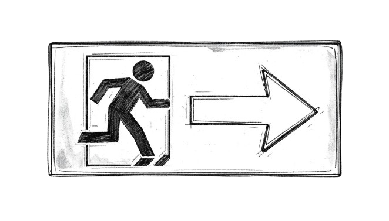

シミュレーションの原点The Origin of the Simulation模拟的起源시뮬레이션의 원점El Origen de la SimulaciónL'Origine de la Simulation
思想Philosophy理念철학FilosofíaPhilosophie
89,000という数字は、人間だ。 89,000 Is Not a Number — It's People. 89,000，不是数字，是人。 89,000이라는 숫자는 사람이다. 89,000 No Es un Número — Son Personas. 89 000, Ce N'est Pas un Chiffre — Ce Sont des Personnes.
鎌倉市の人口は約174,000人。観光シーズンには1日2万人以上が訪れる。大規模地震発生時に津波危険区域にいる可能性のある人数を概算すると、89,000人という数字に達する。 Kamakura has approximately 174,000 residents. During peak tourist seasons, over 20,000 visitors arrive daily. The estimated number of people at risk from a tsunami in a major earthquake reaches 89,000. 镰仓市人口约174,000人。旅游旺季每天有超过2万名游客到访。发生大规模地震时，津波危险区域内可能存在的人数估计达89,000人。 가마쿠라 시의 인구는 약 174,000명. 관광 시즌에는 하루 2만 명 이상이 방문한다. 대규모 지진 발생 시 쓰나미 위험 구역에 있을 가능성이 있는 인원은 개산하면 89,000명에 달한다. Kamakura tiene aproximadamente 174,000 habitantes. En temporada alta, más de 20,000 visitantes llegan diariamente. El número estimado de personas en riesgo de tsunami alcanza 89,000. Kamakura compte environ 174 000 habitants. En haute saison, plus de 20 000 visiteurs arrivent chaque jour. Le nombre de personnes exposées à un tsunami atteint 89 000.
この数字は統計ではない。一人ひとりに家族がいて、足がある。走れる人と、走れない人がいる。地元を知っている人と、今日はじめて鎌倉に来た観光客がいる。 That number is not a statistic. Each one has a family. Some can run; some cannot. Some know the local evacuation routes; others are visiting Kamakura for the very first time. 这个数字不是统计数据。每个人都有家人，都有双腿。有人能跑，有人不能。有人熟悉当地，有人是今天第一次来镰仓的游客。 이 숫자는 통계가 아니다. 한 명 한 명에게 가족이 있고, 다리가 있다. 뛸 수 있는 사람과 뛸 수 없는 사람이 있다. 지역을 아는 사람과 오늘 처음 가마쿠라를 방문한 관광객이 있다. Ese número no es una estadística. Cada uno tiene familia y piernas. Algunos pueden correr; otros no. Algunos conocen las rutas locales; otros visitan Kamakura por primera vez. Ce chiffre n'est pas une statistique. Chacun a une famille et des jambes. Certains peuvent courir, d'autres non. Certains connaissent les routes locales ; d'autres visitent Kamakura pour la première fois.

STRUCTURAL DAMAGE — 構造被害
地震による建物倒壊・道路の寸断は、避難経路そのものを消滅させる。シミュレーションはこの「変化する地形」をリアルタイムで反映する。 Collapsed structures and severed roads can eliminate evacuation routes entirely. The simulation reflects this dynamically changing terrain in real time. 地震引发的建筑倒塌和道路阻断，可能使避难路线完全消失。模拟器实时反映这种"变化的地形"。 지진으로 인한 건물 붕괴·도로 차단은 대피 경로 자체를 소멸시킨다. 시뮬레이션은 이 "변화하는 지형"을 실시간으로 반영한다. El derrumbe de edificios y el corte de carreteras pueden eliminar rutas de evacuación. La simulación refleja este terreno dinámico en tiempo real. L'effondrement de bâtiments et la coupure de routes peuvent éliminer les voies d'évacuation. La simulation reflète ce terrain changeant en temps réel.
なぜ、シミュレーションなのか。 Why Simulation? 为何是模拟？ 왜 시뮬레이션인가? ¿Por Qué Simulación? Pourquoi la Simulation ?
2011年3月11日。東日本大震災の津波は約19,000人の命を奪った。あの映像を見て育った世代として、「次の大地震で鎌倉はどうなるのか」という問いは、他人事ではない。 March 11, 2011. The tsunami of the Great East Japan Earthquake claimed approximately 19,000 lives. For a generation that grew up watching that footage, the question of "what would happen to Kamakura in the next major earthquake" is deeply personal. 2011年3月11日，东日本大震灾的海啸夺走了约19,000人的生命。作为看着那段影像长大的一代，"下一次大地震时镰仓会怎样"这个问题，绝非他人之事。 2011년 3월 11일. 동일본대지진의 쓰나미는 약 19,000명의 목숨을 앗아갔다. 그 영상을 보며 자란 세대로서, "다음 대지진 때 가마쿠라는 어떻게 될까"라는 물음은 남의 일이 아니다. 11 de marzo de 2011. El tsunami del Gran Terremoto del Este de Japón se cobró aproximadamente 19,000 vidas. Para una generación que creció viendo ese metraje, la pregunta de "¿qué le pasaría a Kamakura en el próximo gran terremoto?" es profundamente personal. 11 mars 2011. Le tsunami du Grand Séisme de l'Est du Japon a coûté la vie à environ 19 000 personnes. Pour une génération ayant grandi avec ces images, la question "qu'arriverait-il à Kamakura lors du prochain grand séisme ?" est profondément personnelle.
混雑した避難路。「まだ大丈夫だろう」という正常性バイアス。動けない高齢者を連れて走る家族——これらは全て、数学で記述できる現象だ。 Congested evacuation routes. The normalization bias of "it'll be fine." Families running while supporting elderly relatives who cannot move fast — these are all phenomena that can be described mathematically. 拥堵的避难通道。"应该没事吧"的正常化偏差。牵着无法行动的老人奔跑的家庭——这一切，都是可以用数学描述的现象。 혼잡한 대피로. "아직 괜찮겠지"라는 정상성 편향. 거동하지 못하는 노인을 데리고 뛰는 가족——이 모두는 수학으로 기술할 수 있는 현상이다. Rutas de evacuación congestionadas. El sesgo de normalización de "todo irá bien." Familias corriendo con ancianos que no pueden moverse — todos estos son fenómenos que pueden describirse matemáticamente. Voies d'évacuation encombrées. Le biais de normalisation "ça ira bien." Des familles courant avec des proches âgés — tous ces phénomènes peuvent être décrits mathématiquement.
鎌倉は特殊な都市だ。三方を山に囲まれ、古道の狭い切通しが唯一の脱出路となる。年間2,000万人を超える観光客の多くは、地元の避難路を知らない。土地勘のない人間が89,000人の中に混在したとき、何が起きるのか。その問いに答えられる手段が、当時存在しなかった。 Kamakura is a unique city. Surrounded by mountains on three sides, its narrow ancient passes become critical bottlenecks during evacuation. Most of its 20+ million annual tourists don't know local escape routes. When people unfamiliar with the terrain are mixed into those 89,000 — what happens? No tool existed to answer that question. 镰仓是一座特殊的城市。三面环山，狭窄古道的切通成为唯一的逃生路。每年逾2,000万游客中，大多数不了解当地避难路线。当不熟悉地形的人混入89,000人中时，会发生什么？当时没有任何工具能回答这个问题。 가마쿠라는 특수한 도시다. 삼면이 산으로 둘러싸여 있어, 좁은 옛길 기리도시가 유일한 탈출로가 된다. 연간 2,000만 명을 넘는 관광객의 대부분은 지역 대피로를 모른다. 지리 감각이 없는 사람이 89,000명 속에 섞였을 때, 무슨 일이 일어날까? 당시에는 그 물음에 답할 수단이 존재하지 않았다. Kamakura es una ciudad única. Rodeada de montañas por tres lados, sus estrechos pasos ancestrales son los únicos corredores de evacuación. La mayoría de los 20+ millones de turistas anuales desconocen las rutas locales. ¿Qué ocurre cuando personas sin orientación local se mezclan entre esas 89,000? Ninguna herramienta existía para responder eso. Kamakura est une ville unique. Entourée de montagnes sur trois côtés, ses étroits passages ancestraux sont les seules voies d'évacuation. La plupart des 20+ millions de touristes annuels ne connaissent pas les routes locales. Quand des personnes non familières du terrain se mêlent à ces 89 000 — que se passe-t-il ? Aucun outil n'existait pour répondre.
だからシミュレーションを作った。 So I built one. 因此，我构建了模拟器。 그래서 시뮬레이션을 만들었다. Así que lo construí. Alors je l'ai construit.
シミュレーションは答えではない。 Simulation Is Not an Answer. 模拟不是答案。 시뮬레이션은 답이 아니다. La Simulación No Es una Respuesta. La Simulation N'est Pas une Réponse.
このプロジェクトが生み出すのは「正解」ではない。現実の避難は、いかなるモデルも完全には捉えられない。人間の判断は不合理で、感情的で、予測不能だ。 This project does not produce "correct answers." No model can fully capture real evacuation behavior. Human decision-making is irrational, emotional, and fundamentally unpredictable. 这个项目产生的不是"正确答案"。任何模型都无法完全捕捉现实的避难行为。人类的判断是不合理的、情绪化的、不可预测的。 이 프로젝트가 만들어 내는 것은 "정답"이 아니다. 현실의 대피는 어떤 모델도 완전히 포착할 수 없다. 인간의 판단은 불합리하고, 감정적이고, 예측 불가능하다. Este proyecto no produce "respuestas correctas." Ningún modelo puede capturar completamente la evacuación real. La toma de decisiones humana es irracional, emocional e impredecible. Ce projet ne produit pas de "réponses correctes." Aucun modèle ne peut pleinement capturer le comportement d'évacuation réel. La prise de décision humaine est irrationnelle, émotionnelle et imprévisible.
しかし、モデルは問いを立てるための道具になる。「この避難路に集中したら何分かかるか？」「観光客を誘導員なしで動かせるか？」「津波到達の2分前に警報が届いたとき、何人が逃げられるか？」 But a model becomes a tool for asking sharper questions. How many minutes until this evacuation route becomes gridlocked? Can tourists navigate without a guide? If a warning arrives two minutes before the wave, how many escape? 但模型会成为提出问题的工具。"如果都集中到这条避难路，要多少分钟？""没有引导员能让游客移动吗？""海啸到达前2分钟发出警报时，有多少人能逃脱？" 하지만 모델은 더 날카로운 질문을 던지는 도구가 된다. "이 대피로에 집중하면 몇 분이 걸릴까?" "관광객을 안내원 없이 이동시킬 수 있을까?" "쓰나미 도달 2분 전에 경보가 울렸을 때, 몇 명이 도망칠 수 있을까?" Pero un modelo se convierte en una herramienta para hacer mejores preguntas. ¿Cuántos minutos hasta que esta ruta se bloquee? ¿Pueden los turistas orientarse sin guía? Si la alerta llega dos minutos antes de la ola, ¿cuántos escapan? Mais un modèle devient un outil pour poser de meilleures questions. Combien de minutes avant que cette voie soit bloquée ? Les touristes peuvent-ils naviguer sans guide ? Si l'alerte arrive deux minutes avant la vague, combien s'échappent ?
こうした問いに対して、データで応答できる基盤を作ること。それがこのプロジェクトの存在意義だ。 Building the infrastructure to answer such questions with data — that is the purpose of this project. 建立能够用数据回应这些问题的基础——这就是这个项目存在的意义。 이러한 물음에 데이터로 응답할 수 있는 기반을 만드는 것. 그것이 이 프로젝트의 존재 의의다. Construir la infraestructura para responder esas preguntas con datos — ese es el propósito de este proyecto. Construire l'infrastructure pour répondre à ces questions avec des données — c'est le but de ce projet.

計算することは、想像することだ。 To Compute Is to Imagine. 计算，即是想象。 계산한다는 것은, 상상하는 것이다. Calcular Es Imaginar. Calculer, C'est Imaginer.
避難シミュレーションのビジュアライゼーションを見て、ある人は「これはゲームみたいだ」と言うかもしれない。それで構わない。動く点の一つひとつが、実際にそこに住む誰かの命を表している、と気づく瞬間にこのプロジェクトの意味は届く。 Someone watching the evacuation simulation visualization might say, "It looks like a game." That's fine. The meaning of this project reaches people the moment they realize that each moving dot represents a real human life in that place. 看着避难模拟可视化的人，也许会说"这像个游戏"。没关系。当他们意识到每一个移动的点，都代表着实际生活在那里的某个人的生命时，这个项目的意义便传达到了。 대피 시뮬레이션 시각화를 보고 어떤 사람은 "게임 같다"고 할지도 모른다. 그것도 괜찮다. 움직이는 점 하나하나가 실제로 그곳에 사는 누군가의 생명을 나타낸다고 깨닫는 순간, 이 프로젝트의 의미는 전달된다. Alguien viendo la visualización podría decir "parece un videojuego." Está bien. El significado llega cuando comprenden que cada punto en movimiento representa la vida real de alguien que vive allí. En regardant la visualisation, quelqu'un pourrait dire "on dirait un jeu." C'est bien. Le sens du projet atteint les gens quand ils réalisent que chaque point en mouvement représente la vie réelle d'une personne.
89,000個の点を動かすことは、89,000人を想像することだ。 Moving 89,000 dots is an act of imagining 89,000 people. 移动89,000个点，就是想象89,000个人。 89,000개의 점을 움직이는 것은, 89,000명을 상상하는 것이다. Mover 89,000 puntos es un acto de imaginar 89,000 personas. Déplacer 89 000 points, c'est imaginer 89 000 personnes.